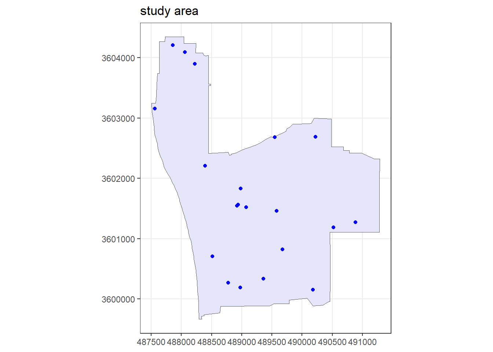

Future of PAM research for Ridgeway’s Rails and Southern California Wetland Habitats
Historical call-response surveys conducted since 1979 have provided a long time-series monitoring of breeding pairs of Ridgeway’s Rails in southern California. This survey design primarily relied on playback of duetting calls to elicit a response from local breeding pairs(Zembal, Hoffman, and Stahl 2024); however, specific field methods varied throughout the field season. Notably, (Thompson et al. 2024) noted that these playback methods work well when used sparingly. A recent statistical examination of call-response survey design recommended repeated sampling to decrease sampling bias(Stevens et al. 2024). While historical call-response surveys have proven to be an effective approach to monitoring Ridgeway’s Rails, recent advances in PAM monitoring using acoustic recorders may provide a more standardized approach to monitoring Ridgeway’s Rails populations that may ultimately lead to more robust estimation of population trends.
Management Needs will Define Role of PAM
While there is great potential for using passive acoustic monitoring to assess wildlife populations, how this is done will depend on the management needs.
Strata study area:
___________________
Design: randomly located transects
Number of samplers: 20
Design angle: 0
Edge protocol: minus
Covered area: 2352730
Strata coverage: 25.36%
Strata area: 9278511
Study Area Totals:
_________________
Number of samplers: 20
Covered area: 2352730
Average coverage: 25.36%

Habitat Modeling
Density Surface Models (dsm) for distance sampling data provide spatial models constructed from generalized additive models following methods developed by Hedley & Buckland (2004) and Miller et al. (2013).
Call-Response vs PAM
Studies of species such as Ridgeway’s Rails benefit from the animals’ tendency to respond vocally to nearby calls. Research suggests that repeated sampling will decrease sampling bias(Stevens et al. 2024), but other research suggests that animals may habituate and render these methods futile(Zembal, Hoffman, and Stahl 2024). Call-response studies provide a measure of the number of animals in a region (abundance), but most call-response studies do not consider how variation in their sampling affects their population estimation. For example, is their ability to detect animals dependent on temporal, environmental or geographic variables? Does the call-response increase their risk by alerting predators to their location? Would an increase in sampling (to decrease bias or to improve seasonal sampling) lead to a decrease in the efficacy of sampling?
While Passive acoustic monitoring (PAM) also relies on the vocal activity of species to study their populations, it is inherently a non-invasive way to remotely sense species’ presence. It necessarily relies on the vocal behavior of these species, and therefore is more appropriate for species that can be easily detected and identified to species based on sounds that they voluntarily make. Instead of the single (or limited) call-response sampling, PAM recorders can be deployed year-round to monitor seasonal changes in vocal activity, and
Benefits and Limitations of Call-Response and PAM Sampling. Green check identifies beneficial characteristics of sampling method, and red X identifies limitation of that sampling method.
Call - Response
Passive Acoustics
High detection rate
Low detection rate
Potential impact on animals
Non-invasive remote sensing
Increased sampling to reduce bias
Increased sampling to reduce bias
Animals may respond to increased sampling
No impact of increased sampling
Limited sampling to reduce habituation
Long-term sampling
Anthropogenic Impacts
Additional Benefits of Passive Acoustic Monitoring
Archived data allows for replication of studies and consideration of additional studies
Soundscape monitoring provides a high-level view of changes to the environment
Effect of helicopters and other sources of anthropogenic noise on species (ADS-B or Automatic Dependent Surveillance-Broadcast), auto-detect/classify noise
Open Science
Open science is a global movement to make scientific research and its outcomes freely accessible to everyone. It accelerates scientific progress and strengthens trust in research. Here are some of the many ways I intend to conduct my research in an open science framework:
Transparency:
Rely primarily (or entirely) on open source software
Make code and data products publicly available on Github
Sharing:
Make research results publicly available (Github Pages and accessible reports, publications)
Share selected audio files publicly for their use in improving AI models
Inclusivity
Identify approaches to include public participation in data collection and analysis
Seek collaborations to extend the scope of this research to take advantage of the great potential of passive acoustic data.
References
Stevens, Bryan S., Courtney J. Conway, Kimberly A. Sawyer, Lauren Kershek, Giselle Block, Sandra Hamilton, and Rebecca Kolstrom. 2024. “Developing a Range-Wide Sampling Framework for Endangered Species: A Case Study with Light-Footed Ridgway’s Rail.”Biodiversity and Conservation 33 (13): 3703–26. https://doi.org/10.1007/s10531-024-02919-5.
Thompson, Andrew R., Rasmus Swalethorp, Michaela Alksne, Jarrod A. Santora, Elliott L. Hazen, Andrew Leising, Erin Satterthwaite, et al. 2024. “State of the California Current Ecosystem Report in 2022: A Tale of Two La Niñas.”Frontiers in Marine Science 11 (February). https://doi.org/10.3389/fmars.2024.1294011.